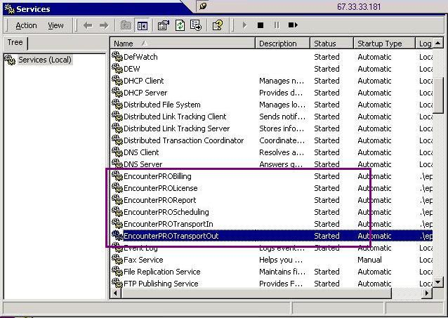
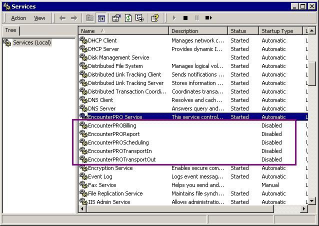

|
Steps
- Open the 'JMJ Tools' folder on the server desktop and double-click the Services icon.
- Scroll down to EncounterPro services and select this line item.
(A practice may not have the 'EncounterPRO Service' but rather have several EncounterPRO services) See screen below:

There is a service for each type of integration. The services are as follows:
- Check In - EncounterPROScheduling and EncounterPROTransportIn
- Check Out - EncounterPROBilling and EncounterPROTransportOut
- Automatic Printing - EncounterPROReport
(vs2 sites only: Cannot Create encounters; not enough licenses - Restart the EncounterPROLicense service)
Please note if a practice has both the 'EncounterPRO Service' and the individual services, please verify that the 'EncounterPRO Service' is running (Status = Status and Startup Type = Automatic) and the individual services are listed as 'disabled' (as shown in the diagram below). The status and startup types can be changed by right clicking on the service name and selecting Properties.

Support is in the process of migrating services and a practice should either be running the 'EncounterPRO Service' or the individual services. Never should both the 'EncounterPRO Service' and the individual services be in the 'Started' status.
- If the services have stopped, click the start button; if the services appear to be running, click stop and then start the services.
(Never click Restart - restart will duplicate threads and practice may experience duplicate check ins and or duplicate billing - if this is the problem, see Screen: Problem: Duplicate Services with encounterPRO Service and update issue # 25449)
- This should clear up the majority of issues that are related to billing, patient data transfers, and printing.
Article #10568 - Restarting EncounterPRO Services
Article created on 6/23/2006 by Harry.Callier
Article last updated on 7/6/2006 by Tamara.Cotton
|